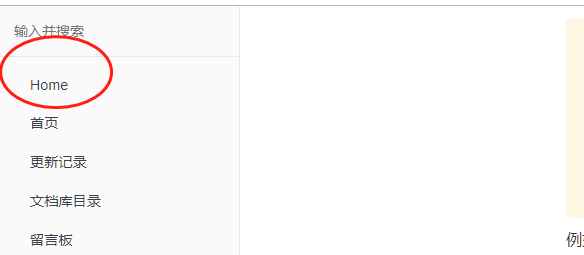
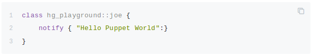
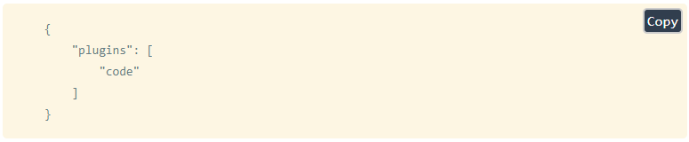
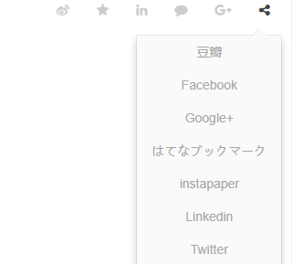
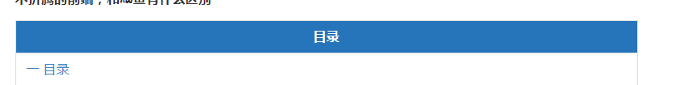
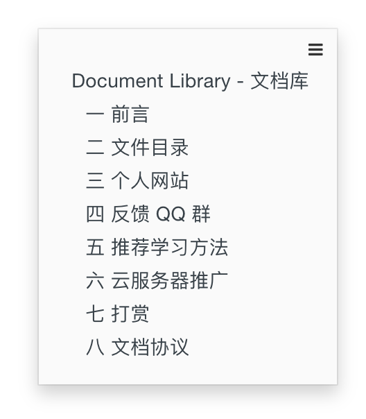

插件
1.book.json 配置
1.1 title
设置书本的标题
"title": "webMrYang的文档库"
1.2 author
作者的相关信息
"author": "webMrYang"
1.3 description
本书的简单描述
"description": "前端一些资料"
1.4 language
Gitbook使用的语言, 版本2.6.4中可选的语言如下：
en, ar, bn, cs, de, en, es, fa, fi, fr, he, it, ja, ko, no, pl, pt, ro, ru, sv, uk, vi, zh-hans, zh-tw
例如，配置使用简体中文
"language": "zh-hans"
1.5 links
在左侧导航栏添加链接信息
"links" : {
"sidebar" : {
"Home" : "https://www.baidu.com"
}
}

1.6 styles
自定义页面样式， 默认情况下各generator对应的css文件
"styles": {
"website": "styles/website.css",
"ebook": "styles/ebook.css",
"pdf": "styles/pdf.css",
"mobi": "styles/mobi.css",
"epub": "styles/epub.css"
}
例如使<h1> <h2>标签有下边框， 可以在website.css中设置
h1 , h2{
border-bottom: 1px solid #EFEAEA;
}
1.7 plugins
配置使用的插件
"plugins": [
"-search",
"back-to-top-button",
"expandable-chapters-small",
"insert-logo"
]
其中"-search"中的 - 符号代表去除默认自带的插件
Gitbook默认自带有5个插件：
- highlight： 代码高亮
- search： 导航栏查询功能（不支持中文）
- sharing：右上角分享功能
- font-settings：字体设置（最上方的"A"符号）
- livereload：为GitBook实时重新加载
1.8 pluginsConfig
配置插件的属性
例如配置prism的属性：
"prism": {
"css": [
"prismjs/themes/prism-solarizedlight.css"
],
"lang": {
"shell": "bash"
}
},
2 插件安装
用法：在book.json中添加"plugins"和"pluginConfig"字段。然后执行gitbook install，或者使用NPM安装npm install gitbook-plugin-插件名，也可以从源码GitHub地址中下载，放到node_modules文件夹里（GitHub地址在进入插件地址右侧的GitHub链接）
2.1 back-to-top-button 回到顶部
在book.json中添加以下内容。然后执行gitbook install，或者使用NPM安装npm install gitbook-plugin-back-to-top-button，也可以从源码GitHub地址中下载，放到node_modules文件夹里（GitHub地址在进入插件地址右侧的GitHub链接）
{
"plugins": [
"back-to-top-button"
]
}
效果如下图所示：
2.2 expandable-chapters 导航目录折叠
在book.json中添加以下内容。然后执行gitbook install，或者使用NPM安装npm install gitbook-plugin-expandable-chapters，也可以从源码GitHub地址中下载，放到node_modules文件夹里（GitHub地址在进入插件地址右侧的GitHub链接）
{
"plugins": [
"expandable-chapters"
]
}
2.3 代码复制
2.3.1. code 代码添加行号&复制按钮
为代码块添加行号和复制按钮，复制按钮可关闭
单行代码无行号。
在book.json中添加以下内容。然后执行gitbook install，或者使用NPM安装npm install gitbook-plugin-chapter-fold，也可以从源码GitHub地址中下载，放到node_modules文件夹里（GitHub地址在进入插件地址右侧的GitHub链接）
{
"plugins": [
"code"
]
}
如果想去掉复制按钮，在book.json的插件配置块更新：
{
"plugins" : [
"code"
],
"pluginsConfig": {
"code": {
"copyButtons": false
}
}
}
效果如下图所示：

2.3.2. copy-code-button 代码复制按钮
为代码块添加复制的按钮。
在book.json中添加以下内容。然后执行gitbook install，或者使用NPM安装npm install gitbook-plugin-copy-code-button，也可以从源码GitHub地址中下载，放到node_modules文件夹里（GitHub地址在进入插件地址右侧的GitHub链接）
{
"plugins": [
"copy-code-button"
]
}
效果如下图所示：

2.4 search-pro 高级搜索（支持中文）
支持中文搜索, 在使用此插件之前，需要将默认的search和lunr 插件去掉。
在book.json中添加以下内容。然后执行gitbook install，或者使用NPM安装npm install gitbook-plugin-search-pro，也可以从源码GitHub地址中下载，放到node_modules文件夹里（GitHub地址在进入插件地址右侧的GitHub链接）
{
"plugins": [
"-lunr",
"-search",
"search-pro"
]
}
2.5 splitter 侧边栏宽度可调节
在book.json中添加以下内容。然后执行gitbook install，或者使用NPM安装npm install gitbook-plugin-splitter，也可以从源码GitHub地址中下载，放到node_modules文件夹里（GitHub地址在进入插件地址右侧的GitHub链接）
{
"plugins": [
"splitter"
]
}
效果如下图所示：

2.6 sharing-plus 多一些分享方式
分享当前页面，比默认的 sharing 插件多了一些分享方式。
在book.json中添加以下内容。然后执行gitbook install，或者使用NPM安装npm install gitbook-plugin-sharing-plus
{
"plugins": ["-sharing", "sharing-plus"],
"pluginsConfig": {
"sharing": {
"douban": false,
"facebook": false,
"google": true,
"pocket": false,
"qq": false,
"qzone": true,
"twitter": false,
"weibo": true,
"all": [
"douban", "facebook", "google", "instapaper", "linkedin","twitter", "weibo",
"messenger","qq", "qzone","viber","whatsapp"
]
}
}
}
其中：
为true的代表直接显示在页面顶端，为false的不显示，不写默认为false
"all"中代表点击分享符号显示出来的
效果如下图所示：

2.7 github 在右上角添加github图标
GitHub地址
在book.json中添加以下内容。然后执行gitbook install，或者使用NPM安装npm install gitbook-plugin-github，也可以从源码GitHub地址中下载，放到node_modules文件夹里（GitHub地址在进入插件地址右侧的GitHub链接）
{
"plugins": [
"github"
],
"pluginsConfig": {
"github": {
"url": "https://github.com/zhangjikai"
}
}
}
效果如下图所示：
2.8 tbfed-pagefooter 页面添加页脚
GitHub地址
在book.json中添加以下内容。然后执行gitbook install，或者使用NPM安装npm install gitbook-plugin-tbfed-pagefooter，也可以从源码GitHub地址中下载，放到node_modules文件夹里（GitHub地址在进入插件地址右侧的GitHub链接）
{
"plugins": [
"tbfed-pagefooter"
],
"pluginsConfig": {
"tbfed-pagefooter": {
"copyright":"Copyright © xxxx.com 2017",
"modify_label": "该文件修订时间：",
"modify_format": "YYYY-MM-DD HH:mm:ss"
}
}
}
效果如下图所示：
2.9 donate 打赏插件
GitHub地址
在book.json中添加以下内容。然后执行gitbook install，或者使用NPM安装npm install gitbook-plugin-donate，也可以从源码GitHub地址中下载，放到node_modules文件夹里（GitHub地址在进入插件地址右侧的GitHub链接）
{
"plugins": [
"donate"
],
"pluginsConfig": {
"donate": {
"wechat": "微信收款的二维码URL",
"alipay": "支付宝收款的二维码URL",
"title": "",
"button": "赏",
"alipayText": "支付宝打赏",
"wechatText": "微信打赏"
}
}
}
2.10 theme-comscore 为Table添加样式
npm地址
在book.json中添加以下内容。然后执行gitbook install，或者使用NPM安装npm install gitbook-plugin-theme-comscore，也可以从源码GitHub地址中下载，放到node_modules文件夹里（GitHub地址在进入插件地址右侧的GitHub链接）
{
"plugins": [
"theme-comscore"
]
}
效果如下图所示：

2.11 prism 为 GitBook 的 Code 添加更好看的样式
prism：为 GitBook 的 Code 添加更好看的样式，使用它的时候记得屏蔽 GitBook 默认的 highlight 插件，即通过 （-highlight 表示，下面出现 - 的插件也一样）
npm地址
在book.json中添加以下内容。然后执行gitbook install，或者使用NPM安装npm install gitbook-plugin-prism，也可以从源码GitHub地址中下载，放到node_modules文件夹里（GitHub地址在进入插件地址右侧的GitHub链接）
{
"plugins": [
"prism",
"-highlight"
],
"pluginsConfig": {
"prism": {
"css": [
"prismjs/themes/prism-solarizedlight.css"
],
"lang": {
"shell": "bash"
}
}
}
}
2.12 anchor-navigation-ex 生成菜单。
expandable-chapters：自动生成菜单,并跳转顶部
GitHub地址
在book.json中添加以下内容。然后执行gitbook install，或者使用NPM安装npm install gitbook-plugin-anchor-navigation-ex，也可以从源码GitHub地址中下载，放到node_modules文件夹里（GitHub地址在进入插件地址右侧的GitHub链接）
{
"plugins": [
"anchor-navigation-ex"
],
"pluginsConfig": {
"anchor-navigation-ex": {
"showLevel": false
}
}
}
效果如下图所示：

2.13 sectionx 将页面分块显示。
用于将页面分成多个部分，并添加按钮以允许读者控制每个部分的可见性。
GitHub地址
在book.json中添加以下内容。然后执行gitbook install，或者使用NPM安装npm install gitbook-plugin-sectionx，也可以从源码GitHub地址中下载，放到node_modules文件夹里（GitHub地址在进入插件地址右侧的GitHub链接）
{
"plugins": [
"sectionx"
]
}
使用方式
| 参数 | 说明 |
|---|---|
| data-title | 该部分的标题，它将显示为bootstrap面板的标题（大小为h2）。 请注意，您不能使用"标题中的字符，请"改用。 |
| data-id | 对按钮控制起作用。 |
| data-show | 默认表示面板内容是否可见的布尔值。 true：默认情况下，面板内容对用户可见，面板标题可以单击。 false：默认情况下，面板内容对用户隐藏，面板标题不可点击，只能通过添加自定义按钮查看 |
| data-nopdf | 一个布尔值，表示该部分是否将隐藏在pdf导出中。 true：面板不会显示在.pdf或.epub中。 |
| data-collapse | 一个布尔值，表示默认情况下是否打开（但仍然可见）该部分。 true：默认情况下，面板内容对用户可见，但已关闭。 false：默认情况下，面板内容对用户隐藏，但已打开（默认设置）。 |
控制按钮
| 标签 | 说明 |
|---|---|
| class | 该按钮必须属于类“section”。 |
| target | 当按下时，将切换id为target的部分//这里就是用到上面的的data-id |
| show | 隐藏目标部分时按钮上的文本。 |
| hide | 目标部分可见时按钮上的文本。 |
example：
<button class="section" target="section2" show="显示模块2" hide="隐藏模块2"></button>
<!--sec data-title="模块2" data-id="section2" data-show=true ces-->
内容部分2
<!--endsec-->
2.14 baidu-tongji 添加百度统计。
npm地址
在book.json中添加以下内容。然后执行gitbook install，或者使用NPM安装npm install gitbook-plugin-baidu-tongji，也可以从源码GitHub地址中下载，放到node_modules文件夹里（GitHub地址在进入插件地址右侧的GitHub链接）
{
"plugins": [
"baidu-tongji"
],
"pluginsConfig": {
"baidu-tongji": {
"token": "f3f331c21843f7b950e103f51fbabc60"
}
}
}
2.15 favicon 更改网站的 favicon.ico。
npm地址
在book.json中添加以下内容。然后执行gitbook install，或者使用NPM安装npm install gitbook-plugin-favicon，也可以从源码GitHub地址中下载，放到node_modules文件夹里（GitHub地址在进入插件地址右侧的GitHub链接）
{
"plugins": [
"favicon"
],
"pluginsConfig": {
"favicon": {
"shortcut": "assets/images/favicon.ico",//首先，shortcut通常可以被所有可以显示favicon的浏览器读取。
"bookmark": "assets/images/favicon.ico",//在收藏夹中显示自己的图标
"appleTouch": "assets/images/apple-touch-icon.png",//是一个类似网站favicon的图标文件，用来在iphone和iPad上创建快捷键时使用
"appleTouchMore": {
"120x120": "assets/images/apple-touch-icon-120x120.png",
"180x180": "assets/images/apple-touch-icon-180x180.png"
}
}
}
}
2.16 待做项☑。
添加 Todo 功能。默认的 checkbox 会向右偏移 2em，如果不希望偏移，可以在 website.css 里加上下面的代码:
GitHub地址
在book.json中添加以下内容。然后执行gitbook install，或者使用NPM安装npm install gitbook-plugin-todo，也可以从源码GitHub地址中下载，放到node_modules文件夹里（GitHub地址在进入插件地址右侧的GitHub链接）
{
"plugins": [
"todo"
]
}
使用示例：
* [ ] write some articles
* [x] drink a cup of tea
- write some articles
- drink a cup of tea
2.17 Codeblock显示所包含文件的内容。
使用代码块的格式显示所包含文件的内容. 该文件必须存在。插件提供了一些配置，可以区插件官网查看。如果同时使用 ace 和本插件，本插件要在 ace 插件前面加载。
CodeblockNPM地址
aceNPM地址
在book.json中添加以下内容。然后执行gitbook install，或者使用NPM安装npm install gitbook-plugin-include-codeblock gitbook-plugin-ace，也可以从源码GitHub地址中下载，放到node_modules文件夹里（GitHub地址在进入插件地址右侧的GitHub链接）
{
"plugins": [
"include-codeblock",
'ace'
],
"pluginsConfig": {
"include-codeblock": {
"template": "ace",
"unindent": "true",
"theme": "monokai"
}
}
}
使用示例：
Example of code \[import\](./test.js)
Example of code
2.18 gitalk 评论插件。
gitalk 利用 github 的开发者接口授权,将讨论区的 issue 变成评论区,和 github 结合的如此紧密,适合用源码托管到 github 这类情况.
我们在需要评论的页面中加入下面代码
<link rel="stylesheet" href="https://cdn.jsdelivr.net/npm/gitalk@1/dist/gitalk.css">
<script src="https://cdn.jsdelivr.net/npm/gitalk@1/dist/gitalk.min.js"></script>
<div id="gitalk-container"></div>
<script>
var gitalk = new Gitalk({
"clientID": "8c2f22bd64d1ea012ac5",
"clientSecret": "992cdea444e1503ceac91bfd74907b37e590a159",
"repo": "webmryang.github.io",
"owner": "WebMrYang",
"admin": ["WebMrYang"],
"id": location.pathname,
"distractionFreeMode": false
});
gitalk.render("gitalk-container");
</script>
字段意思：
1. `clientID` ：GitHub 开发者设置，客户端连接标识。
2. `clientSecret`：GitHub 开发者设置，客户端秘钥。
3. `repo`：GitHub 仓库名，我们的就是 document-library 啦。
4. `owner`：GitHub 仓库所有者，就是我 GitHub 账户：`LiangJunrong`。
5. `admin`：GitHub 仓库管理者，还是我的 GitHub 账户：`LiangJunrong`。（支持数组，多个管理者）
6. `id`：页面的唯一标识，默认值: `location.href`
7. `distractionFreeMode`：类似 Facebook 评论框的全屏遮罩效果,默认值: `false`
[官方配置](https://github.com/gitalk/gitalk#install)<br/>